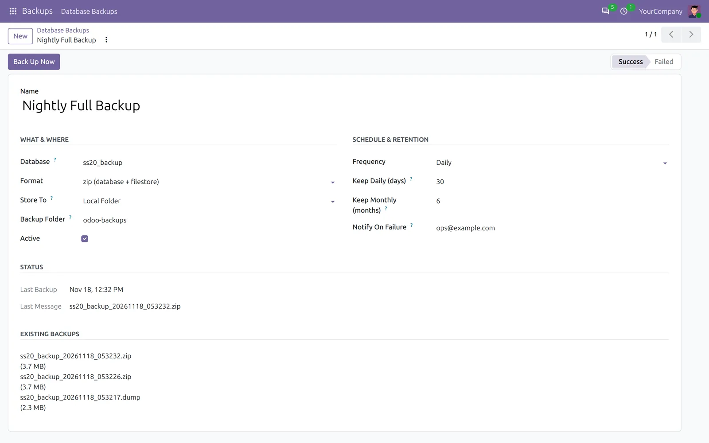

Local Backup - Database Backup to a Server Folder
Database backup to a local server folder: scheduled automatic backups written to a folder you choose, kept tidy by the retention policy. Add-on for Database Backup.
- Price
- Free
- Odoo versions
- 16.0
- 17.0
- 18.0
- 19.0
- 20.0
- Technical name
tamadoo_db_backup_local- License
- LGPL-3

Text and screenshots below are from the Odoo 20.0 version of this module.
Store your scheduled backups in a server folder.
What it does
Adds Local Folder as a destination for Tamadoo Database Backup. Backups are written straight to a folder you choose on the server, and the same retention policy keeps that folder tidy.
- Backups land directly in your chosen folder.
- odoo.sh-style retention applied to the folder.
- See the folder's current backups right on the form.
How it looks
Point a backup at a local folder
Set Store To to Local Folder and enter the destination path.

Step by step
1. Install the module
The base engine Tamadoo Database Backup is installed with it.
2. Open a backup
Open Backups → Database Backups and create a backup or open an existing one.
3. Point it at a folder
Set Store To to Local Folder and enter the Backup Folder, for example /var/odoo/backups. The Odoo server must be allowed to write there.

4. Back up
Click Back Up Now. The file is written to the folder and listed under Existing Backups; files outside your retention settings are removed.
Requirements
- Odoo 20 — Community or Enterprise.
- Tamadoo Database Backup (
tamadoo_database_backup) — the base engine.
Tamadoo · tama.odoo@gmail.com
Get Local Backup
Questions before buying? Write to tama.odoo@gmail.com.